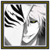
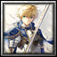

Season 1 archive · Go to active Season 2 →
← All playersPlayer profile
ximperial
Rank #73server.eurobattle.netSeason 1
Most played · Seha Lee 2
Matches13630 wins · 106 losses
Win rate22%
Avg K / D / A32.3 / 48.6 / 14.9
Avg APM134
Avg damage dealt221.7k
Avg damage taken182.2k
Heroes played
Explore heroes →| HERO | MATCHES | WIN RATE | AVG K / D / A | AVG DMG |
|---|---|---|---|---|
Seha Lee 2Most played | 8 | 25% | 39.1 / 52.2 / 14.6 | 277.5k |
遠野志貴 | 7 | 0% | 26.1 / 51.7 / 12.9 | 195.2k |
Ragna | 6 | 33% | 35.8 / 49.5 / 13.5 | 217.1k |
『斬撃の花』 | 6 | 17% | 27.0 / 46.5 / 13.7 | 157.6k |
ロロノア・ゾロ | 5 | 40% | 38.4 / 48.4 / 15.4 | 236.3k |
ユーハバッハ | 5 | 20% | 35.0 / 57.8 / 18.4 | 281.4k |
Shirosaki | 5 | 0% | 32.6 / 43.0 / 12.4 | 181.6k |
【Silver Arbiter】 | 5 | 0% | 27.2 / 51.2 / 14.0 | 181.1k |
Shin Jinrui Sozo Keikaku | 4 | 25% | 20.5 / 52.0 / 13.2 | 183.1k |
Gundam Exia Repair IV | 3 | 67% | 42.0 / 39.7 / 16.0 | 276.8k |
朝田 詩乃 | 3 | 33% | 36.0 / 34.7 / 15.7 | 255.0k |
仮面ライダーカブト | 3 | 33% | 28.0 / 52.0 / 16.3 | 192.5k |
永劫の火鳥 | 3 | 33% | 38.3 / 50.7 / 14.3 | 260.0k |
ナミカゼ ミナト | 3 | 33% | 38.0 / 42.7 / 23.3 | 206.5k |
仮面ライダータイクーン | 3 | 0% | 27.7 / 44.3 / 10.0 | 157.3k |
Dante スパーダの息子 | 3 | 0% | 34.3 / 53.0 / 18.3 | 263.2k |
ミサカ ミコト | 2 | 100% | 47.5 / 40.0 / 22.5 | 250.7k |
Scion of the Flame | 2 | 50% | 33.0 / 51.0 / 9.5 | 252.2k |
藍染 EX | 2 | 50% | 19.5 / 49.0 / 12.5 | 172.0k |
身勝手の極意 | 2 | 50% | 39.5 / 46.5 / 15.5 | 231.2k |
blue KEZYO | 2 | 0% | 33.5 / 57.5 / 14.0 | 300.7k |
レゼ | 2 | 0% | 25.0 / 49.0 / 15.5 | 256.6k |
竈門 炭治郎 | 2 | 0% | 28.0 / 44.5 / 17.0 | 194.5k |
『Codename 555-SB』 | 2 | 0% | 34.0 / 50.0 / 14.5 | 311.6k |
朱雀院 紅葉 | 2 | 0% | 32.0 / 57.0 / 13.0 | 244.4k |
黒鉄一輝 | 2 | 0% | 24.5 / 52.5 / 15.0 | 152.0k |
ヤト,ヤボク | 1 | 100% | 35.0 / 46.0 / 20.0 | 278.5k |
黒崎 一護 | 1 | 100% | 38.0 / 33.0 / 14.0 | 211.7k |
モンキー・D・ルフィ | 1 | 100% | 28.0 / 43.0 / 22.0 | 232.1k |
《氷結の魔女》 | 1 | 100% | 29.0 / 49.0 / 26.0 | 290.0k |
Lelouch Vi Britannia | 1 | 100% | 32.0 / 53.0 / 23.0 | 210.7k |
Mastered Ultra Instinct Powered | 1 | 100% | 39.0 / 58.0 / 18.0 | 305.7k |
Firefly | 1 | 0% | 24.0 / 48.0 / 12.0 | 204.7k |
KenshinEx | 1 | 0% | 42.0 / 47.0 / 16.0 | 281.2k |
Future Depresesd Niggas | 1 | 0% | 33.0 / 52.0 / 20.0 | 255.9k |
Saber Alter | 1 | 0% | 25.0 / 38.0 / 13.0 | 287.5k |
 白一護 | 1 | 0% | 41.0 / 40.0 / 9.0 | 247.6k |
堕天 | 1 | 0% | 30.0 / 43.0 / 11.0 | 189.2k |
【苍白の抹消者】 | 1 | 0% | 24.0 / 44.0 / 18.0 | 254.4k |
The One Who Stands Above All | 1 | 0% | 24.0 / 56.0 / 12.0 | 215.1k |
Kiana Kaslana | 1 | 0% | 20.0 / 52.0 / 13.0 | 235.7k |
Majin Alter | 1 | 0% | 19.0 / 39.0 / 13.0 | 151.1k |
Kケイ・ダッシュ | 1 | 0% | 32.0 / 73.0 / 15.0 | 284.8k |
仮面ライダーアークワン | 1 | 0% | 28.0 / 47.0 / 11.0 | 236.9k |
The Honored One | 1 | 0% | 16.0 / 52.0 / 12.0 | 186.9k |
ロズウェル | 1 | 0% | 29.0 / 55.0 / 19.0 | 238.9k |
上条当麻 | 1 | 0% | 36.0 / 51.0 / 11.0 | 245.3k |
 「聖剣王」 | 1 | 0% | 40.0 / 39.0 / 18.0 | 278.3k |
Zero | 1 | 0% | 34.0 / 57.0 / 12.0 | 263.8k |
【完全で瀟洒なメイド】 | 1 | 0% | 35.0 / 44.0 / 19.0 | 276.1k |
イレイナ | 1 | 0% | 38.0 / 50.0 / 9.0 | 212.9k |
Blade | 1 | 0% | 15.0 / 32.0 / 14.0 | 99.2k |
『星の理』 | 1 | 0% | 21.0 / 48.0 / 13.0 | 204.9k |
ヤヒコ | 1 | 0% | 56.0 / 42.0 / 8.0 | 312.2k |
Akaza | 1 | 0% | 34.0 / 37.0 / 15.0 | 151.0k |
仮面ライダークロノス | 1 | 0% | 43.0 / 49.0 / 8.0 | 213.0k |
Spirit of Destruction | 1 | 0% | 17.0 / 52.0 / 13.0 | 68.8k |
『千魂の刃』 | 1 | 0% | 28.0 / 65.0 / 16.0 | 220.5k |
The Last Future of Embryo | 1 | 0% | 33.0 / 49.0 / 17.0 | 198.2k |
Shadow | 1 | 0% | 48.0 / 40.0 / 25.0 | 240.5k |
黒崎 一護断界 | 1 | 0% | 49.0 / 49.0 / 20.0 | 261.5k |
The Honored One B | 1 | 0% | 33.0 / 55.0 / 15.0 | 201.8k |
雷電忘川守芽衣 | 1 | 0% | 32.0 / 37.0 / 11.0 | 169.3k |
Kenshiro | 1 | 0% | 33.0 / 47.0 / 13.0 | 154.4k |
『黑猫』 | 1 | 0% | 42.0 / 45.0 / 14.0 | 218.4k |
スパサイヤジンフォルゴジタ | 1 | 0% | 28.0 / 57.0 / 22.0 | 188.8k |
カルナ | 1 | 0% | 25.0 / 51.0 / 14.0 | 124.0k |
『Shadow』 | 1 | 0% | 21.0 / 42.0 / 11.0 | 111.1k |
仮面ライダーアギト | 1 | 0% | 42.0 / 47.0 / 11.0 | 204.0k |
Hitsugaya Toshiro | 1 | 0% | 32.0 / 51.0 / 13.0 | 194.9k |
Averages use recorded statistics only; unavailable historical values are shown as —.
Recent matches
Open a match for its scoreboard and kill matchups.
LOSS65:32
MCB #2000160
18 Oct 2026 · 22:43 WIB
26.0 / 52.0 / 9.0View match →
LOSS60:17
MCB #2000159
18 Oct 2026 · 00:04 WIB
24.0 / 48.0 / 12.0View match →
LOSS60:39
MCB #2000158
17 Oct 2026 · 22:34 WIB
36.0 / 35.0 / 12.0View match →
LOSS55:10
MCB #2000156
16 Oct 2026 · 22:56 WIB
32.0 / 40.0 / 12.0View match →
WIN65:27
MCB #2000155
15 Oct 2026 · 20:29 WIB
34.0 / 23.0 / 10.0View match →
WIN56:38
MCB #2000150
12 Oct 2026 · 19:24 WIB
35.0 / 46.0 / 20.0View match →
LOSS76:42
MCB #1000059
10 Oct 2026 · 23:22 WIB
45.0 / 60.0 / 6.0View match →
LOSS69:46
MCB #1000058
10 Oct 2026 · 21:52 WIB
47.0 / 50.0 / 16.0View match →
WIN70:56
MCB #1000057
10 Oct 2026 · 20:29 WIB
21.0 / 36.0 / 13.0View match →
WIN70:35
MCB #2000142
10 Oct 2026 · 18:16 WIB
40.0 / 50.0 / 10.0View match →